Bristol, in the age of sail. The Hispaniola sails at dawn, and every hand must first sign the ship's articles.
The articles are the rules the crew agrees to live by. One article is still blank: what does the crew owe a hand who falls sick or gets hurt? It is a small version of a big question. Is there a right to health care?
Use → (or Next) to advance and reveal points. F = fullscreen.
Where You Stand Now
Rate each statement. There are no right answers, and you'll rate them again at the end.
Everyone has a right to health care, whether or not they can pay for it.If someone's illness is just bad luck, nobody else is obliged to pay for their treatment.Health care is different from other things people buy, like cars or phones.We should spend whatever it takes to save a person whose life is in danger.It is fair to deny one person an expensive treatment if the money would help many more people.
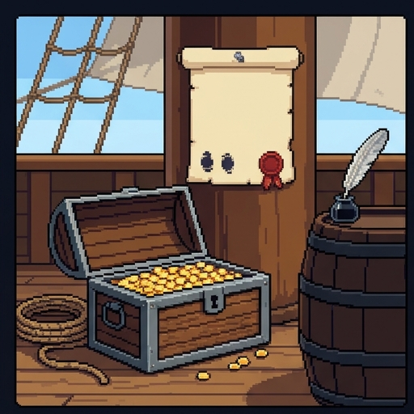
Pirates Had Sick Pay
Ship's articles were real. Crews wrote down their rules, and every hand signed.
The pirate Bartholomew Roberts's crew agreed that a man who lost a limb would get "800 Dollars, out of the publick Stock."
The Royal Navy's Chatham Chest, begun around 1590, took sixpence a month from every sailor's pay for men hurt in service.
Both were a kind of insurance. Everyone paid in while healthy, and the injured drew out.
So the question is old. Do people who share risks owe each other care when the risks come due?
Meet the Crew
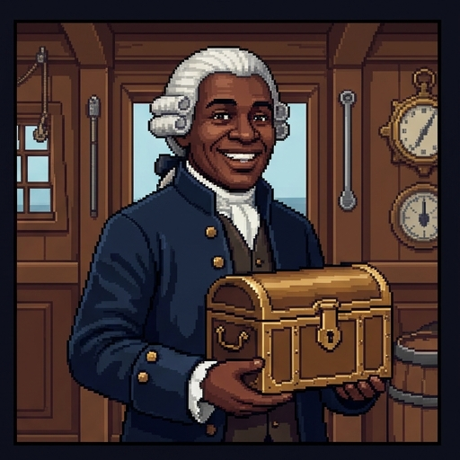
Livesey
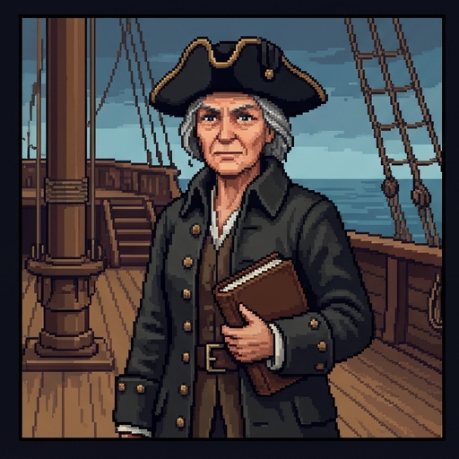
Smollett
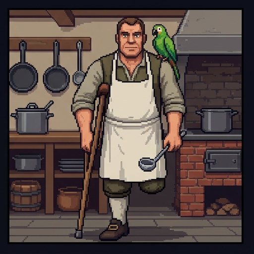
Silver
Dr. Livesey is the ship's doctor. Whatever the article says, he is the one who has to carry it out.
Captain Smollett keeps the chest. Every coin paid out for care comes from it.
Long John Silver, the cook, lost his left leg at sea. He paid his own way afterward, and he is proud of it.
You are the ship's clerk. When the crew has argued it out, you will write the blank article.
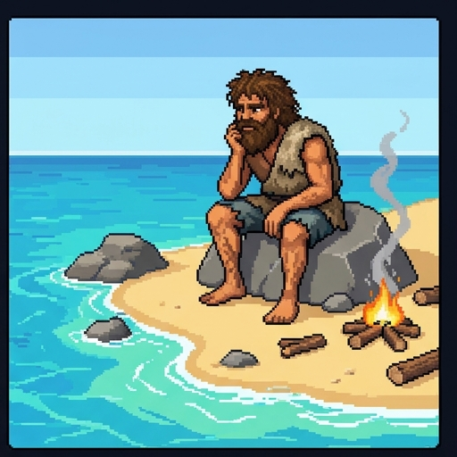
Two Kinds of Rights
A right is a claim that someone else owes you something. Marooned alone on an island, Ben Gunn has nobody to claim against.
Others must not do something to you. It costs them nothing but holding back.
The right not to be thrown overboard.
Others must do something for you, and it costs them time, effort, or money.
The right to be pulled out of the water.
A right to health care would be a positive right. That is why people argue about it.
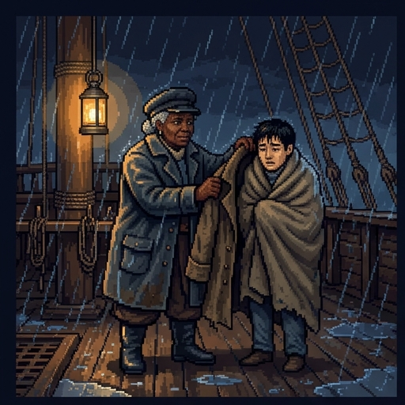
Health or Health Care?
Nobody can promise you health. Storms, germs, accidents, and old age arrive whatever anyone does.
So a right to health is a strange idea. Nobody could be the one who owes it to you.
A right to health care is different. Others can owe you treatment, or a share of the chest that pays for it.
In this lesson, a right to health care means a claim on others for care. It is never a promise of health.
What the Law Says Today
A legal right is one the law enforces. A moral right is one you have whether or not the law agrees. Here are some legal ones.
EMTALA, a 1986 US law, says hospitals with emergency rooms that take Medicare must examine anyone who comes in, then stabilize or safely transfer them.
That holds whether or not the patient can pay. But it is a right to emergency care only: the hospital can still bill, and nothing is owed once the patient is stable.
The UN's Universal Declaration of Human Rights (1948) lists medical care as part of a decent standard of living.
A 1966 UN treaty promises "the highest attainable standard of physical and mental health." The US signed it in 1977 and has never ratified it.
The Emergency Room
Free treatment for the arm, including any follow-up visits he needsNothing, since an emergency room may turn away a woman who can't payAn exam, and treatment to stabilize her, whether or not she can payHealth insurance through the hospital, starting from the day he arrives
Illness shrinks your share of life's opportunities, so justice requires health care.
Is Health Care Special?
One argument for a right to health care comes from the philosopher Norman Daniels, who first set it out in Just Health Care (1985).
Nobody thinks you have a right to a fancy hat. You buy one if you want it and can afford it.
Most people think a sailor with a broken leg should not be left on the dock because she is poor.
Daniels asks what makes health care different from hats. His answer comes in three steps.
Step 1: Normal Functioning
Daniels starts from a plain idea of health. Health is normal functioning: your body and mind working the way human bodies and minds typically work.
Disease and injury are departures from normal functioning. A broken leg, scurvy, and failing eyes all count.
He takes this idea from the philosopher Christopher Boorse. It depends on how the body works, not on what you want.
Being short like your parents is not a departure. That case will come back.
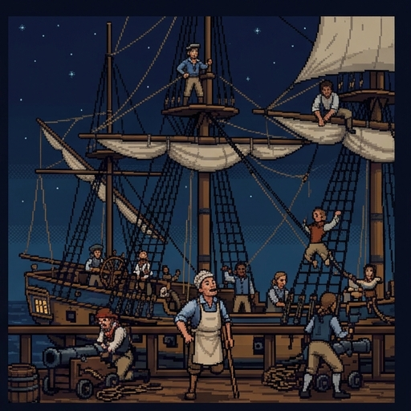
Step 2: The Opportunity Range
Every society offers a range of lives a person could reasonably choose. Daniels calls it the normal opportunity range.
On a ship, the range is the stations: lookout, topman (who works the sails aloft), helmsman, gunner, cook, and more.
Disease shrinks your share of that range. Silver lost his leg, and the rigging closed to him.
Health care keeps your share of the range open, or opens it again.
Light the Lanterns
Step 3: Fair Equality of Opportunity
The third step comes from John Rawls's A Theory of Justice (1971).
Rawls argued that jobs and positions must be open to everyone, and not only on paper.
People with the same talent and the same willingness to use it should have the same chances, wherever they started.
He called this fair equality of opportunity. It is one reason schooling is public.
Daniels adds that illness takes opportunity away too. So justice must protect health, just as it protects schooling.
Put the Argument Together
Fill in each step of Daniels's argument.
1. Health is normal
functioning.2. Disease shrinks a person's share of the normal
opportunity range.3. Justice requires fair
equality of opportunity.4. So a just society owes its members
health care.
A Fair Share, Not Everything
The argument does not say you are owed every treatment that might help. You are owed your fair share.
What is fair depends on what a society can afford. A ship's chest is not a city's treasury.
It reaches past doctors. Limes, clean water, decent food, and safe rigging protect normal functioning too.
In 1983 a US presidential commission agreed that everyone should be able to get "an adequate level of care without excessive burdens." It chose not to call this a right.
What Follows?
Public health measures, like clean water, are covered as well as doctorsWhat a person is owed depends partly on what their society can affordHealth care is owed for a different reason than goods like hats areEveryone is owed any treatment that might help them, whatever it costsA just society owes each of its members good healthCare is owed because it makes the crew as happy as possible
The Utilitarian Case
A utilitarian doesn't start from rights. Utilitarians judge a choice by its total effect on everyone's well-being.
Health is a large part of well-being. A sick crew suffers, and it can't sail.
A coin buys more good as medicine for a poor sailor than as wine for a rich one. Each extra coin does less for you the more you already have.
John Stuart Mill said a right is something society should protect because of "general utility."
So a utilitarian can back a right to care. It is a rule that does the most good, not a demand of fairness.
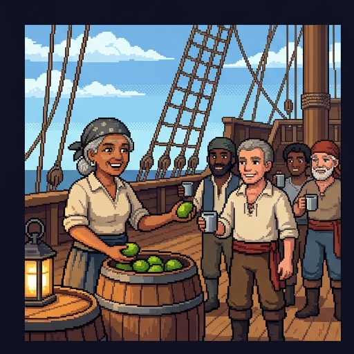
Limes for Everyone
Scurvy was one of the great killers at sea. It comes from too little vitamin C.
In 1747 the naval surgeon James Lind gave twelve sailors with scurvy six different remedies. The two given oranges and lemons recovered fastest.
Citrus is cheap and protects everyone aboard. On a utilitarian ledger, almost nothing buys more health per coin.
Daniels agrees, because prevention keeps everyone's opportunity range open. This is where the two arguments meet.
Two Reasons for Care
Both views back care for everyone. They give different reasons, and the reasons matter when the chest runs short.
Care is owed because illness takes away a fair share of opportunity. Each person's share counts on its own.
Kit, a cabin girl, has a fever that may kill her. Her whole range is at stake, so her claim is strong.
Care is worth buying because it does the most good. What counts is the total, added up across the crew.
If the same coins could cure thirty toothaches, the total might favor the thirty.
Where They Split
Whether cheap prevention, like limes, is worth buying for the crewWhether many small benefits can outweigh one person's large needWhether the crew's health matters at all when spending the chestWhether a sailor who lost a leg should have to pay into the chest
The Natural Lottery
Silver lost his leg, saved his pay, and bought a tavern with no help from anyone. Was he owed help? The philosopher H. Tristram Engelhardt (1986) said no.
Some losses come from nature: storms, germs, a falling spar. Engelhardt called this the natural lottery.
A loss in the natural lottery is unfortunate. It is unfair only if someone wronged you.
If nobody wronged you, nobody owes you repair. Helping you is kind, but it is charity, not a right.
People may still choose to pool their money for care. What they can't do is claim care from others as a right.
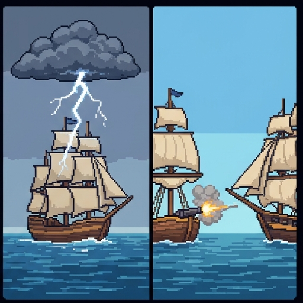
A Reply
Defenders of a right to care can grant the first point. A storm wrongs nobody.
But Rawls wrote that the natural lottery is "neither just nor unjust." What is just or unjust is "the way that institutions deal with these facts."
A crew that leaves its injured on the dock has made a choice. That choice can be unfair even when the storm was not.
Much illness isn't pure luck, either. Silver lost his leg in a sea battle, doing the crew's most dangerous work.
Decision Point: Silver's Sixpence
Yes. Every hand shares the risks, so every hand pays.Yes, but only for injuries suffered doing the ship's work.No. He may give freely, but nobody should force him.No, and then the chest owes him nothing either.
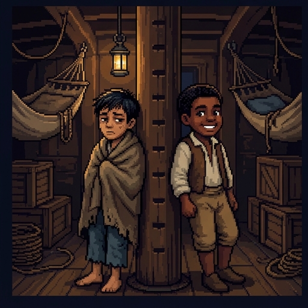
Too Little? The Two Cabin Boys
Other critics say Daniels's argument covers too little. Consider two cabin boys.
Tom is short because a long fever stunted his growth. Jem is just as short because his parents are short.
The same tonic would make either boy taller. On Daniels's view, only Tom is owed it.
This pair is modeled on a real 1990 debate about growth hormone, which used two boys called Johnny and Billy.
Critics ask: if the two boys' lives will go the same way, why should the cause of their height decide who gets help?
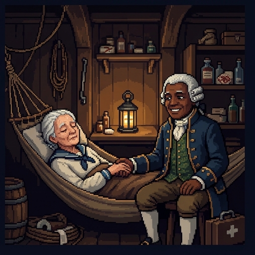
Too Little? The Last Watch
Old Redruth is dying. No treatment will give her back a single station.
Laudanum and nursing would ease her pain in her last weeks. On the opportunity account, it is hard to say why that is owed.
A utilitarian has no such trouble. Suffering is bad, and easing it does good, whatever your opportunities are.
Daniels agrees that care for the dying is owed. He says the reasons are "compassion and beneficence," which "go beyond questions of justice."
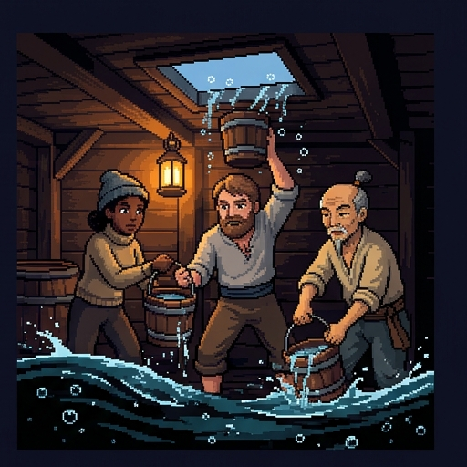
The Bottomless Hull
Every bucket bailed helps, and the leak never stops.
Health care is like that. There is always another test, another treatment, or another month of life that more money could buy.
So every real system rations: it limits care somehow. It can ration by price, by waiting lists, or by rules about what is covered.
Daniels agrees that a right to care can't be a right to everything. The hard part is deciding who gets what when the chest runs short.
Spend the Chest
Oregon, 1987
This trade-off has happened in real life.
In 1987 Oregon stopped paying for heart, liver, pancreas, and bone-marrow transplants for poor patients on Medicaid.
The money went to basic care for more low-income children and pregnant women. Oregon's leaders argued that this would save more lives.
Coby Howard, age seven, had leukemia and needed a bone-marrow transplant. His family raised over half the $100,000 cost, but not in time. He died in December 1987.
The people helped instead were just as real, but nobody knew their names. His death made the trade-off hard to accept. That pull is called the rule of rescue.
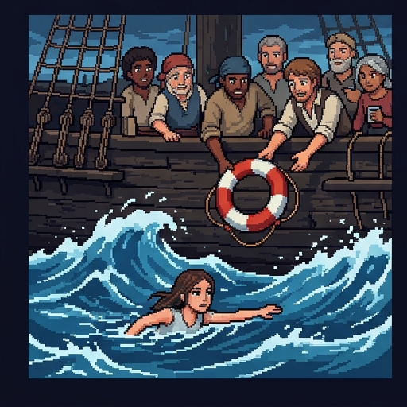
Decision Point: Man Overboard
In 1986 the philosopher Albert Jonsen named the rule of rescue, the pull to save a person we can see from death, whatever it costs: "We throw a rope to the drowning."
Turn back. You don't leave a shipmate in the water.Turn back, but only if the cost to the crew stays small.Sail on. The stores keep everyone else alive.
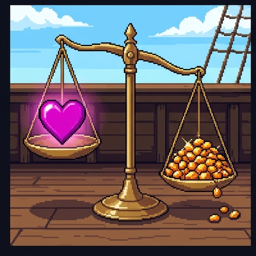
The Oregon List
In 1990 Oregon tried rationing in the open. It ranked about 1,600 treatments by cost and benefit and planned to pay for those above a line.
The first list ranked capping a tooth above surgery for an ectopic pregnancy, which can kill the mother.
That is the aggregation problem. Add up enough small benefits, and they outrank saving a life.
Oregon rewrote the list. In 1992 the federal government still rejected it at first, saying its scores counted disabled people's lives as worth less.
Name the Problem
Each sailor is arguing about the chest. Pick the problem each one raises.
"Thirty toothaches cured is more good than one fever treated, once you add it all up."
aggregation"If we can only treat one of them, flip a coin. Each deserves an equal shot."
fair chances"Kit is the worst-off soul aboard. That alone should move her up the list."
the sickest first"He's right there in the water. You can't put a price on that."
rule of rescue
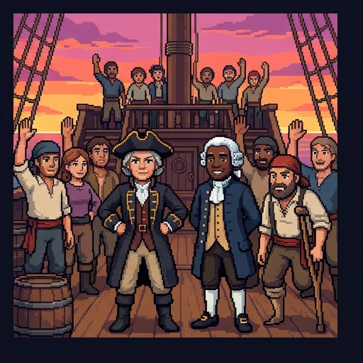
When Principles Run Out
Daniels admits no principle settles these problems. So he and the psychiatrist James Sabin asked what makes a limit fair to impose. Their answer is accountability for reasonableness.
Publicity. The rules for who gets what, and the reasons for them, are posted for everyone to see.
Relevance. The reasons are ones fair-minded people can accept, like evidence about what works.
Appeals. Anyone can challenge a decision, and the rules change when new evidence or arguments appear.
Enforcement. Someone makes sure the first three conditions are actually kept.
Write the Article
Where You Stand Now
These are your ratings from the start. Rate each statement again.
The Articles, Summed Up
The question: a moral right to health care is a positive right to care, never to health. US law gives a narrow right to emergency care.
Daniels: health protects your share of opportunity, and justice protects opportunity. So care is owed, up to a fair share.
The utilitarian: care, above all cheap prevention, does great good. Added-up benefits can outweigh one person's claim.
The objections: Engelhardt says bad luck is not injustice. Critics say Daniels's line falls in odd places. Rationing raises problems that only a fair process can settle.
The Hispaniola sails at dawn. Whatever you wrote, every hand will live by it.